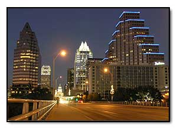
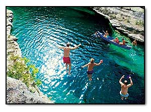
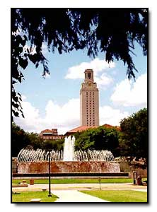

A Beautiful City. Austin's beauty and its relaxed "live and let live" attitude make it a very special place. Newcomers to Austin find that their stereotypes of Texas are quickly replaced by images of green rolling hills, sparkling rivers and lakes, and natural spring-fed pools. Attention to the quality of life is evident in the environmental consciousness of the community, the richness of the parks system, the numerous hike and bike trails, and the variety of multicultural arts and music festivals.
Artists and Musicians. Austin comes alive with a variety of artistic, musical, and culinary offerings that represent a diversity of cultures and tastes. Austin is recognized as the "Live Music Capital of the World" and is well known as a center for rock, jazz, rhythm and blues, alternative, and country and western music. Austin offers over 200 live music venues, and has produced such notable musical talents as Asleep at the Wheel, Marcia Ball, Joe Ely, Nanci Griffith, Angela Strehli, Willie Nelson, Jerry Jeff Walker, Bob Schneider, The Fabulous Thunderbirds, W. C. Clark, Tish Hinojosa, Spoon, Ghostland Observatory, Daniel Johnston, and Explosions in the Sky, as well as the late Janis Joplin, Stevie Ray Vaughan, and Gene Ramey. Even our airport has a live music stage! Our PBS affiliate produces the popular music program "Austin City Limits," which is taped in a brand new studio in downtown Austin.
Austin's hot spots include Sixth Street and the venerable warehouse district nearby. Music festivals and weekend events leave little time for boredom. Whether it's the Austin City Limits Festival, Blues on the Green, or the Old Pecan Street arts festival, Austinites find any reason to come together. In fact, each spring, we celebrate Eeyore's birthday with his very own festival! Austin also hosts the annual South-by-Southwest Music, Film, and Multimedia Festival, a 10-day event that attracts thousands to the Capital City. The festival includes film screenings, panel discussions, workshops, and hundreds of bands from all over the globe. In addition, Austin's film industry is blossoming, with celebrities, movie premieres, and film shoots becoming increasingly common sights.

A resident ballet, a lyric opera company, and a local symphony feature regular performances year-round. Live theater is found throughout the city, with free outdoor performances (such as Shakespeare in the Park) in the summer months. Austin's cultural milieu includes a number of local museums and galleries, including the LBJ Presidential Library, the Texas Memorial Museum, the Blanton Musuem of Art, and the Harry Ransom Humanities Research Center. Austin also has over 35 art galleries, including The Contemporary Austin and the Umlauf Sculpture Gardens.
Food lovers beware: Austin is said to have the nation's highest number of restaurants per capita, with everything from Vietnamese to Jamaican food. Of course, "Tex-Mex" and authentic interior Mexican cuisine are easy to find, while Barbecue is never in short supply. There are a variety of health food and specialty stores throughout town, like Wheatsville and Central Market. In addition, Austin is the headquarters of Whole Foods Market, the world's largest retailer of natural and organic foods.
Relaxed Atmosphere. Austin maintains a comfortable Southwestern atmosphere, where friendly, cordial people speak to strangers on the street and are pleased to be helpful in any way they can. While Austin still has its share of pickup trucks and cowboy boots, you will find it to be a progressive city that is simultaneously sophisticated and laid-back. Blue jeans or formal wear are equally welcome almost anywhere in town, whether you are attending one of the more than 1,700 restaurants or opening night at the theater.
Outdoor Activities. Austin sits atop the Edwards Aquifer just east of the lush and rolling Texas Hill Country, one of the state's most treasured regions. Juniper and live oak trees dot the scenery while rugged valleys of limestone carve majestic vistas into the landscape. Springtime in the Hill Country is an enchanting time when native bluebonnets and Indian paintbrush blanket the hills in vibrant violets and reds.

The greater Austin area is a virtual playground for the outdoor enthusiast. The paths of Town Lake and the Barton Creek Greenbelt provide countless miles of hiking and biking trails. Texas summers would be unthinkable without Barton Springs Pool, a spring-fed swimming hole with waters registering a consistent year-round temperature of 68 degrees. Zilker Park and the Botanical Gardens are adjacent to the springs and the Lady Bird Johnson Wildlife Center displays a beautiful array of native Texas plants. You can also catch spectacular sunsets from the heights of Mt. Bonnell in West Austin. Skiers, sailors, boaters, and swimmers play in the waters of Lake Travis, one of five area lakes created by the Colorado River in the Highland Lakes chain. Texans' passionate love of sports is evidenced by 26 golf courses, an ice hockey team (Texas Stars), and the various UT Longhorns sports teams.
Zilker Botanical Gardens
UT Longhorns

Education Level. Austin is the most highly educated community among medium and large U.S. cities, with more than one-third of all adults having earned a four-year college degree. The city is also prominent as a center for high-tech research and development, hosting such firms as IBM, Apple Computer, Motorola, 3M, Dell Computer, Texas Instruments, and Samsung, to name a few.
The University. The University of Texas, founded in 1883 by action of the State Legislature, was funded by land set aside for endowment. This land, which amounts to some 2,000,000 acres, was initially leased for grazing and other purposes in order to fund The University. In 1933, oil production began on the western lands, and receipts from oil leases and royalties became part of the permanent fund. The U.T. system is the most highly endowed of any state university in the U.S., second only to Harvard when private colleges and universities are included.
Diverse Student Body. The U.T. student body numbers approximately 52,000, along with 3,100 faculty and 21,000 staff distributed among 53 departments in 17 schools and colleges. Approximately 50% of enrolled students are members of ethnic minority groups (18% Hispanic, 15% Asian American, 4% African American) or classified as international students (9%). Thus, the student body has a diversity that assures a richness of cultures, attitudes, interests, and backgrounds.
More information on Austin can be found at:
Thanks to the U.T. Department of Chemistry and Biochemistry for their contributions to this page!